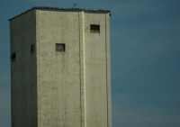
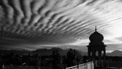
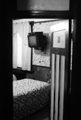
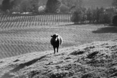

Story
Unfortunately I've never really felt like I have much writing talent, so here is a
synopsis of one of my favorite novels, Catch-22.
"Catch-22 is like no other novel we have ever read. It has its own style, its own rationale, its own extraordinary character. It moves back and forth
from hilarity to horror. It is outrageously funny and strangely affecting. It is totally original. It is set in the closing months of World War II,
in an American bomber squadron on a small island off Italy. Its hero is a bombardier named Yossarian, who is frantic and furious because thousands
of people he hasn't even met keep trying to kill him. (He has decided to live forever even if he has to die in the attempt.) His problem is Colonel
Cathcart, who keeps raising the number of missions the men have to fly. The others range from Lieutenant Milo Minderbinder, a dedicated entrepreneur
(he bombs his own airfield when the Germans make him a reasonable offer: cost plus 6%), to the dead man in Yossarian's tent; from Major Major Major,
whose tragedy is that he resembles Henry Fonda, to Nately's whore's kid sister; from Lieutenant Scheisskopf (he loves a parade) to Major -- de Coverley,
whose face is so forbidding no one has ever dared ask him his first name; from Clevinger, who is lost in the clouds, to the soldier in white, who lies
encased in bandages from head to toe and may not even be there at all; from Dori Duz, who does, to the wounded gunner Snowden, who lies dying in the tail
of Yossarian's plane and at last reveals his terrifying secret. Catch-22 is a microcosm of the twentieth-century world as it might look to someone
dangerously sane. It is a novel that lives and moves and grows with astonishing power and vitality. It is, we believe, one of the strongest creations of
the mid-century."
Goodreads. (n.d.). Catch 22 by Joseph Heller | Goodreads. Retrieved October 3, 2022, from https://www.goodreads.com/book/show/957549.Catch_22
Art
A crew member in my Alaska trail used to always have a camera on him. I bought one of my own awhile later. I used to take it and it's huge case everywhere with me,
taking pictures out car windows or anywhere I was at the time.
 
 